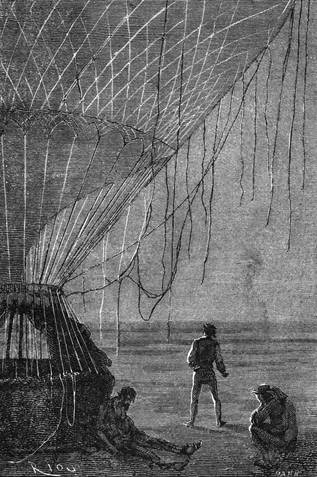

Sto třináct stupňů. – Doktorovy úvahy. – Zoufalé pátrání. – Dmuchavka shasne. – Sto dvacet dva stupně. – Pohled na poušť. – Procházka v noci. – Samota. – Malomocnost. – Joovy návrhy. – Dá si ještě den.
Cesta, kterou Viktorie urazila předešlého dne, nepřevyšovala patnáct kilometrův, a na to, aby se udržela ve výši, spotřebováno sto šedesát dvě stopy plynu.
V sobotu ráno dal doktor znamení k odjezdu.
„Dmuchavka stačí pracovati už jen šest hodin,“ pravil. „Nedopídíme-li se za šest hodin ani pramene ani studny, Bůh sám ví, kam se podějeme.“
„Je dnes málo větru, pane!“ podotkl Joe, „ale možná, že se strhne,“ dodal vida zármutek Fergussonův špatně tajený.
Marná naděje! Panovalať ve vzduchu úplná tišeň, z těch tišní, které v tropických mořích poutají lodi urputně k místu. Vedro vzmohlo se do nesnesitelna, a teploměr ukazoval ve stínu pod stanem sto třináct stupňů[45].
Joe a Kennedy natažení vedle sebe hleděli zapomenouti na své postavení ne-li ve spánku, aspoň ve ztrnulosti. Nucená nečinnost plodila jim trapnou nudu. Politování hodnější jest člověk, jenž nedovede se vymknouti myšlenkám prací nebo hmotným zaměstnáním; zde však nebylo k ničemu dohlížeti, rovněž nebylo nic zkoušeti; bylo třeba se podrobiti okolnostem bez naděje v lepší obrat.
Trýznivá žízeň ozývala se krutěji; kořalka neukájela této nezbytné potřeby, nýbrž ji stupňovala, zasluhujíc v pravdě jména „tygřího mléka“, kterým ji nazývají afričtí domorodci. Zbýval sotva litr ohřáté tekutiny. Každý upíral pohled na těch několik kapek tak vzácných a nikdo neodvažoval se smočiti v nich rty. Litr vody uprostřed pouště!
Tu se doktor Fergusson v úvahy zahloubený tázal sama sebe, jednal-li moudře. Nebyl-li by lépe učinil, kdyby byl uchoval tu vodu, kterou nadarmo rozložil v plyny, aby se udržel v ovzduší? Vykonal ovšem kousek cesty, ale zda se tím dostal dále? Kdyby se nalézal o sto kilometrů záze v této šířce, co by na tom sešlo, když neměl vody na tomto místě? Kdyby konečně povstal vítr, vanul by tam dole jako zde, ba zde méně rychle, kdyby přicházel od východu! Ale naděje pudila Samuela vpřed! A přece byly by ty dva gallony vody marně spotřebované stačily vybýti devět dní zastávky v této poušti! A jaké změny mohly nastati za devět dní! Možná také, že by se byl s lepší potázal, kdyby si byl tu vodu uchoval a vznesl se vyhodě přítěž, byť i byl nucen vypustiti plyn, aby opět sestoupil! Než plyn byl krví balonu, jeho životem!
Tisíceré tyto úvahy vířily hlavou, kterou vkládal do dlaní a nevztyčoval po celé hodiny.
„Dlužno učinit poslední pokus!“ řekl sám k sobě o desáté z rána. „Vynasnažím se; naposledy, abych nalezl vzduchový proud, který by nás unášel. Třeba nasadit to poslední, co ještě máme.“
A co jeho soudruzi dřímali, rozehřál do velké teploty vodík v baloně, jenž se zakulatil napětím plynu a vystoupil rovně do kolmých paprsků slunečních. Doktor hledal nadarmo nějaký vítr od sta stop až do pěti tisíc; místo, odkud vzletěl, zůstávalo urputně pod ním; zdálo se, že panuje úplné bezvětří až do nejzazších mezí dychatelného vzduchu.
Posléze došla voda na podpal; dmuchavka shasla nedostatkem plynu; Bunsenův sloup přestal účinkovati, a Viktorie smršťujíc se snesla se zlehka na písek na témž místě, které loďka byla v něm vyhloubila.
Bylo poledne; měření ukázalo 19° 35' délky a 6° 51' šířky, tedy vzdálenost skorem osmi set kilometrův od jezera Čadského a šesti set padesáti kilometrův od západního pomoří afrického.
Když vzducholoď přistála k zemi, probrali se Dick a Joe z tupé omámenosti.
„Což se zastavujeme?“ pravil Skot.
„Musíme,“ odpověděl Samuel vážným hlasem.
Jeho soudruzi pochopili. Půda byla tu v úrovni s hladinou mořskou, ježto se byla neustále nížila; pročež octl se balon v úplné rovnováze a v naprosté nehybnosti.

Doktor dal se sám v pochod jasnou hvězdnou nocí.
Váha cestovatelů nahrazena rovným nákladem písku, i vystoupili na zemi; každý zabral se ve své myšlenky, a po několik hodin nepromluvili ani slova. Joe ustrojil večeři, záležející v sucharech a pemmikanu, jíž se sotva dotekli; doušek palčivé vody doplnil tuto smutnou hostinu.
V noci nikdo nebděl, nikdo však také nespal. Parno bylo dusné. Nazejtří nezbývalo již nic více nežli čtvrt litru vody; doktor postavil ji stranou, i usnesli se na tom, že se jí nedotknou leč v čas svrchované potřeby.
„Dusím se,“ vykřikl za nedlouho Joe, „vedro se zdvojuje! Nedivím se tomu,“ dodal, podívav se na teploměr, „sto čtyřicet stupňů!“[46]
„Písek pálí,“ stěžoval si lovec, „jako by vycházel z výhně. A ani mráčku na tom planoucím nebi. Člověk aby z toho zšílel!“
„Nezoufejme si,“ pravil doktor; „po takových velkých parnech nastávají v této šířce nevyhnutelně bouřky a propukají s rychlostí blesku; ačkoliv jest obloha tak děsně jasna, mohou se ani ne za hodinu udati velké změny.“
„Ale tu by bylo aspoň pozorovati nějakou známku,“ namítnul Kennedy.
„No,“ těšil ho doktor, „zdá se mi, jakoby tlakoměr trochu klesal.“
„Kéž tě nebesa slyší, Samuele, neboť jsme tu přikuti k zemi jako pták, jemuž zlomena křídla.“
„S tím rozdílem však, milý Dicku, že naše křídla jsou neporušena, a doufám věru, že nám zase budou sloužiti.“
„Ach! vítr! jen vítr!“ zvolal Joe. „Něco, co by nás doneslo k nějakému potoku, studnici, a bylo by nám dobře; o potraviny není nouze, a kdybychom měli vodu, přečkali bychom měsíc, netrpíce! Ale žízeň je krutá věc.“
Žízeň, ale rovněž i nepřetržitý pohled na poušť unavovaly ducha; nebyloť tu nejmenší nerovnosti půdy, ani jediného písečného kopce, ani oblázku, aby na něm zraky utkvěly. Ta nesmírná, jednotvárná pláň vzbouzela malomyslnost a jitřila chorobu, jíž se říká nemoc pouště. Netečnost toho suchého blankytu nebeského a toho žlutého nekonečného písku děsila posléze. V tom rozpáleném ovzduší zdálo se horko chvěti jako nad ohništěm do běla žíhaném; zoufalství jímalo mysl, vidoucí tu klidnou nesmírnost a nespatřující nižádné příčiny, aby takový stav věcí přestal, neboť nesmírnost jest jakousi věčností.
Na nešťastnících, strádajících nedostatkem vody v této žhoucí teplotě, počaly se jeviti známky chorobného vzrušení mysli; oči se jim zvětšovaly, jich pohled stával se kalným.
Když nastala noc, odhodlal se doktor k tomu, že rychlým pochodem vybaví se z této znepokojivé nálady; chtěl se pustiti na několik hodin touto písečnou rovinou nikoli proto, aby hledal, nýbrž aby se pohyboval.
„Pojďte,“ pravil ke svým druhům; „věřte mi, že vám to prospěje.“
„Nemožná věc,“ odvětil Kennedy, „nejsem s to, abych udělal jediný krok.“
„Já budu raději spát,“ řekl Joe.
„Ale spánek aneb odpočinek budou vám osudný, přátelé. Pročež bojujte proti této otupělosti. Nuže, pojďte.“
Doktor nedovedl jich přiměti k ničemu, i dal se sám v pochod jasnou hvězdnou nocí. První kroky působily mu trýzeň; byly to kroky člověka sesláblého a chůzí odvyklého, než poznal brzy, že tento cvik poslouží dobře jeho zdraví; ušel několik kilometrů na západ, a jeho mysl nabývala již opět pevnosti, když se mu najednou zatočila hlava; domníval se nakláněti nad propast; cítil, že mu kolena klesají; ta čirá samota ho děsila; byl matematickým bodem, středem nekonečného okruhu, to jest ničím! Viktorie zmizela docela v šeru. Doktor byl zachvácen nepřekonatelnou hrůzou – on, netečný, odvážný cestovatel! Chtěl se vrátiti, odkud přišel, ale nadarmo; volal! Ani ozvěna mu neodpověděla, a jeho hlas zanikl v prázdnu jako kámen v bezedné propasti. Lehl si ochable na písek, jsa sám a sám prostřed pouště jako hrob zamlklé.
O půlnoci nabyl zase vědomí v náručí svého věrného Joa, který jsa znepokojen dlouhou nepřítomností pánovou, byl se pustil po jeho šlépějích, zřetelně na pláni vytlačených; zastihl ho ve mdlobách.
„Co jest vám, pane?“ otázal se.
„Nebude to nic, milý Joe; chvilková slabost, nic více.“
„Nebude to vskutku nic, pane; ale vstaňte; opřete se o mne, a vraťme se k Viktorii.“
Doktor vzav Joa pod paží dal se opět cestou, kterou byl přišel.
„Dopustil jste se neopatrnosti, pane, že jste si vyšel tak na zdařbůh. Mohl jste býti oloupen,“ zasmál se. „Ale nechme toho, pane, mluvme vážně.“
„Mluv, poslouchám tě!“
„Je nezbytně třeba, bychom se na něčem usnesli. V tomto postavení nemůžeme již vytrvat, leč několik dní, a nenastane-li vítr, je po nás veta.“
Doktor neodpověděl.
„Nuže, někdo z nás musí se obětovat pro obecnou spásu, a rozumí se samo sebou, že jsem to já!“
„Co tím míníš? co hodláš?“
„Hodlám jen tolik: vezmu si potravu a půjdu pořád rovnou před sebe, až někam dojdu, a to je jisto, že někam dojdu. Sešlou-li vám zatím nebesa příznivý vítr, nebudete na mne čekat, ale vydáte se na cestu. Já pak dostanu-li se do nějaké vsi, vypomohu si s nesnází několika arabskými slovy, která mi napíšete na papírek, a přivedu vám pomoc, anebo tam nechám kůži! Co říkáte mému záměru?“
„Že je nesmyslný, ale hodný tvého statečného srdce, Joe. Je to nemožné, neodejdeš od nás.“
„Ale vždyť se musíme o něco pokusit, pane; vám to nikterak neuškodí, poněvadž nebudete na mne čekat, jak pravím ještě jednou, a možná, že se neminu se zdarem!“
„Ne, Joe! ne, my se nerozloučíme! to by k druhým útrapám přibyla nová. Bylo psáno, aby se tak stalo, a jest mimo vší pochybu psáno, že bude později jinak. Pročež čekejme trpělivě.“
„Budiž, pane; ale něco vám oznamuji předem: dávám vám ještě den; déle čekat nebudu; dnes máme neděli či vlastně pondělí, neboť jest hodina z rána; nevydáme-li se v úterý na cestu, pustím se na dobrodružství; tohoto záměru nevzdám se žádnou měrou.“
Doktor neodpověděl; za chvilku přistoupil k loďce a usedl podle Kennedye. Lovec trval v úplném úmlku, který však nebyl spánkem.